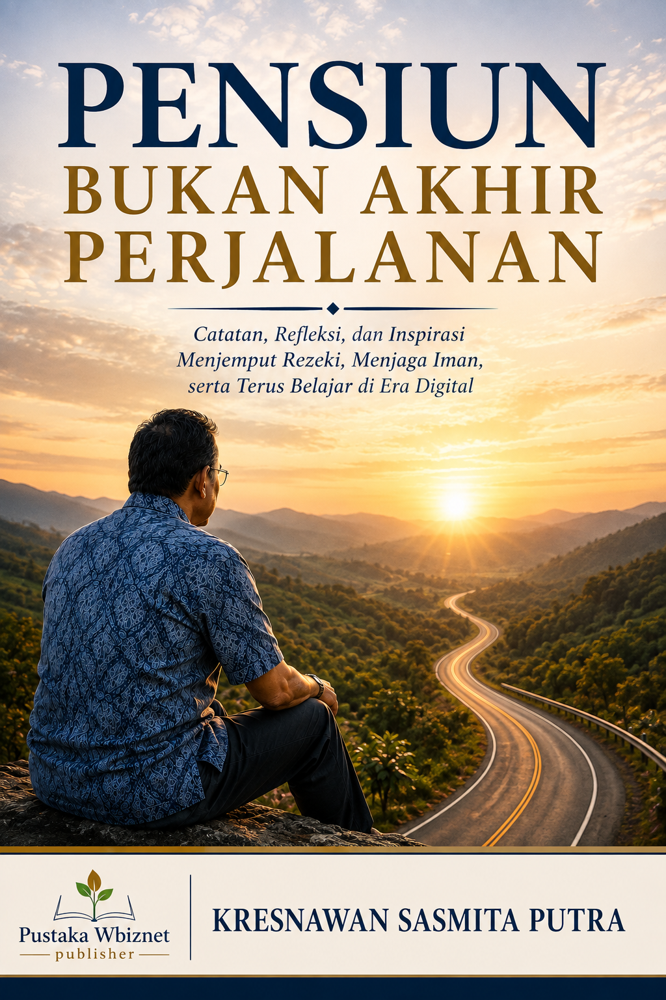
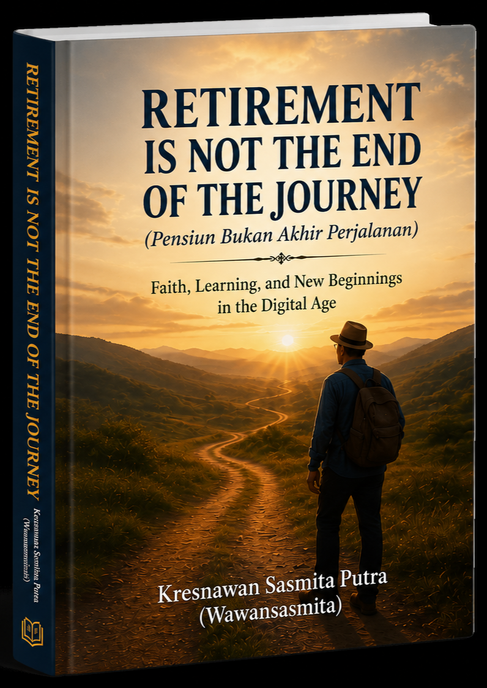
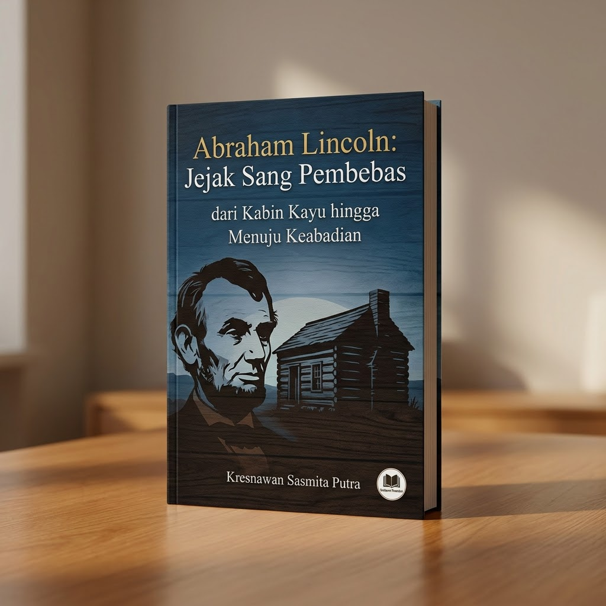
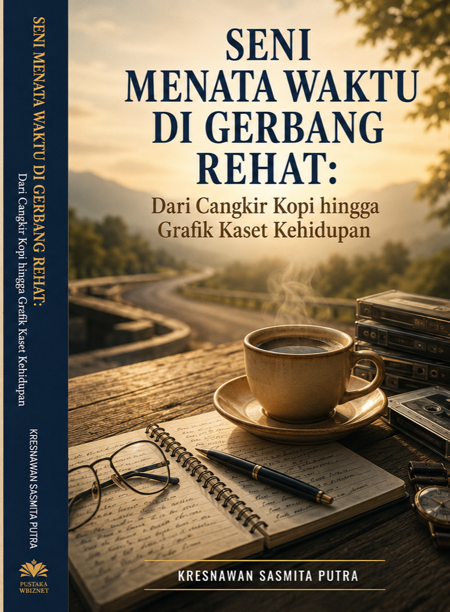

Dari Purnabakti Menuju Karya
Purnabakti memberikan waktu. Menulis memberikan ruang. Berkarya memberikan arti.
Pensiun Bukan Akhir Perjalanan

Sebuah catatan tentang kehidupan setelah pensiun dan bagaimana masa purnabakti dapat menjadi awal perjalanan baru untuk belajar, bekerja dengan cara berbeda, menulis, dan tetap memberikan manfaat.
Retirement is Not the End of the Journey

Edisi bahasa Inggris yang membawa gagasan yang sama: masa setelah karier bukan akhir dari perjalanan, melainkan kesempatan untuk menemukan kembali tujuan.
90 Hari Melejitkan Penjualan Produk Digital
Catatan praktis tentang perjalanan mempelajari dunia penjualan digital, mulai dari pemasaran hingga menemukan cara menjual produk.
It's 1776 in Indonesia: Ulasan Strategis Perjuangan dan Konflik Kolonial (1942–1949)
Catatan penelusuran sejarah yang lahir dari ketertarikan untuk membaca kembali perjuangan Indonesia mempertahankan kemerdekaan.
Abraham Lincoln: Jejak Sang Pembebas dari Kabin Kayu hingga Menuju Keabadian

Kisah perjalanan hidup Abraham Lincoln mengenai kepemimpinan, integritas, kebebasan, dan tanggung jawab.
Seni Menata Waktu di Gerbang Rehat

Catatan tentang waktu, istirahat, ritme hidup, dan bagaimana menata kembali kehidupan saat memasuki fase tenang.
Sriwijaya Poros Maritim Dunia

Penelusuran sejarah mengenai Sriwijaya, ruang maritim Nusantara, dan jaringan dunia maritim masa lalu.
📰 Purbaya Yudhi Sadewa: Belajar Ekonomi Langsung dari Paul Romer, Peraih Nobel Ekonomi
Kisah perjalanan studi Purbaya Yudhi Sadewa bersama Paul Romer menunjukkan bahwa kredibilitas seorang pembuat kebijakan tidak hanya dibangun dari pengalaman praktis di pasar keuangan, melainkan juga berakar kuat dari disiplin ilmu ekonomi tingkat tinggi yang dipelajari dari para pemikir terbaik dunia..
📚 Koleksi Biografi & Video Narasi
🎬 Jacqueline Kennedy Onassis
Ibu Negara AS (1961–1963) & Ikon Budaya Dunia. Dilengkapi artikel biografi dan video narasi.
💃 Biografi Mata Hari
Kisah Penari Eksotis & Agen Rahasia Legendaris Perang Dunia I.
🎬 Biografi Margaret Thatcher
Kisah PM Inggris yang dijuluki "The Iron Lady".
🎬 Biografi Al Capone
Kisah mafia dan tokoh kontroversial Amerika Serikat.
🎬 Biografi Vladimir Putin
Perjalanan hidup dari dinas intelijen KGB hingga menjadi tokoh kunci politik Rusia.
🎬 Biografi Jack Ma (Pendiri Alibaba)
"Hari ini berat, besok akan lebih berat lagi, tetapi lusa akan indah." — Jack Ma
🎬 Biografi Fidel Castro
"Satu-satunya keinginan saya adalah bertarung sebagai seorang prajurit ide." — Fidel Castro
🎬 Biografi Jengis Khan
"Jikalau engkau tidak mampu menaklukkan dirimu sendiri, engkau tidak akan pernah mampu menaklukkan dunia." — Jengis Khan
🎬 Biografi Christopher Columbus
=""Kamu tidak akan pernah bisa menyeberangi lautan sampai kamu memiliki keberanian untuk kehilangan pandangan dari pantai." — Christopher Columbus
🎬 Biografi Mick Jagger
"Anything worth doing is worth overdoing." — Mick Jagger
🎬 Biografi Salahuddin Ayyubi
Teladan Ksatria dan Pembebas Baitul Maqdis
🎬 Biografi Cleopatra
Cleopatra VII Ratu Terahir Mesir Kuno .
🎬 Biografi Mao Zedong
Kisah Gelap dan Gemilang Mao Zedong .
Klik tombol di bawah ini untuk mengunduh dan memasang aplikasi secara langsung di ponsel Android Anda:
Download & Install APKBuka web ini di browser Safari → Tekan ikon Share (kotak dengan panah ke atas) → Pilih "Tambahkan ke Layar Utama".